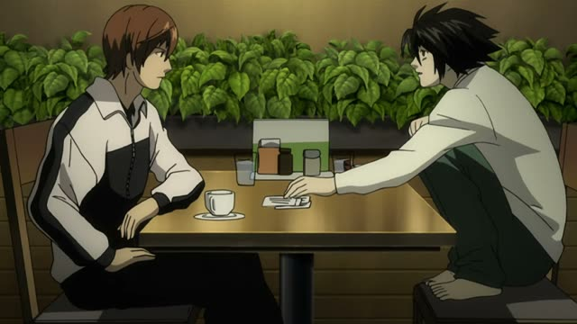
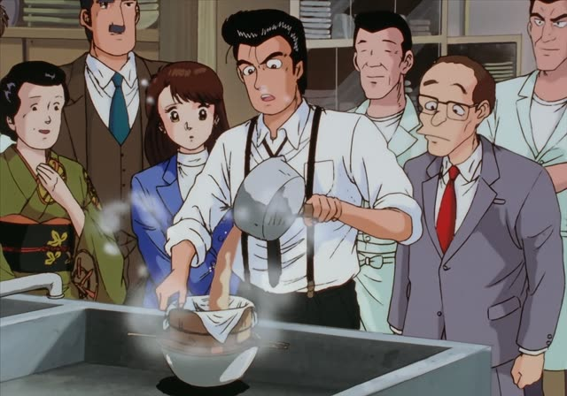
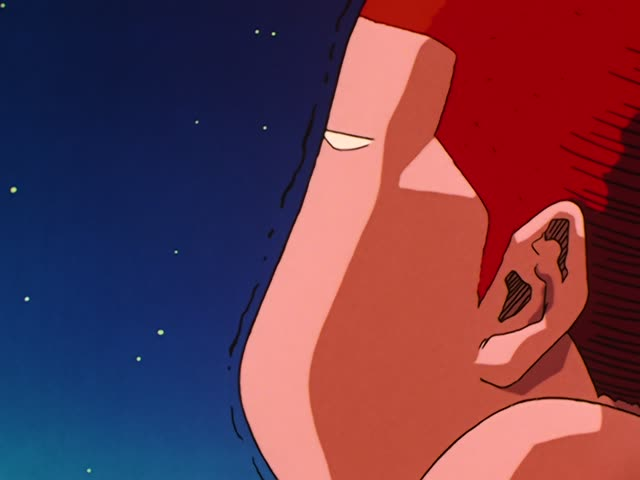
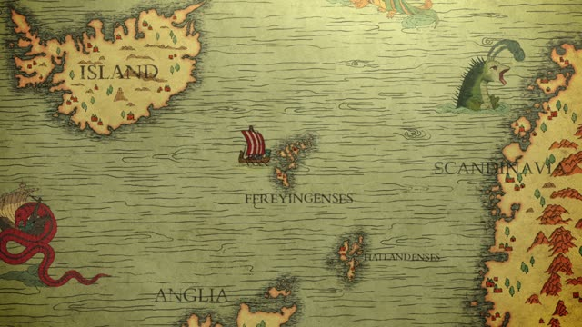

～と (If)
Noun or な-adjective? Add だ.
| Word | Add | Ending | ||
|---|---|---|---|---|
| Noun | 学生 | だ | と | If you're a student, (then)... |
| な-adjective | 静か | だ | と | When it's quiet, (always)... |
| Verb | 行く | – | と | When I go, (always)... |
| い-adjective | 高い | – | と | When it's expensive, (always)... |

Death Note · Episode 10
これを加えるとこうなります。
"When you add this, you get this." [the fourth photo]
～と after a plain form means "when, if, whenever": the second part follows every time, like a rule of nature or a machine. Plain verb + と: 加えると, 押すと.
On this card, L adds a fourth photo to the others, and the message reads differently. なります makes it polite.
The second part can't be a request or a plan (～てください, ～たい). For those, use たら.

Oishinbo · Episode 12
カツオ節は煮出し過ぎると魚臭くなる。
"If you boil bonito flakes too long, they turn fishy."
On this card, Yamaoka explains how to make stock. It always happens: that's と.
Quick Examples
Explaining a vending machine.
このボタンを押すと、お茶が出ます。
"When you press this button, tea comes out."
Machines and how-tos: と.
PoliteGiving directions.
右に曲がると、駅があるよ。
"Turn right and there's the station."
CasualTalking about spring.
春になると、桜が咲きます。
"When spring comes, the cherry trees bloom."
PoliteYour friend asks why you're sleepy.
雨だと眠くなるんだ。
"Rain always makes me sleepy."
After a noun: だと.
CasualWith and without
ボタンを押したら、電話して。
"Once you press the button, call me." たら works with a request.
ボタンを押すと、音が鳴る。
"When you press the button, it beeps." Every time.
Examples from Media
Sakamoto Days · Episode 10
これ押すと強力になるみたいですよ。
"It looks like if you press this, it gets stronger."
A switch on the bath.
Kekkon Dekinai Otoko · Episode 2
あのままお肉食べてると病気になりますよ。
"If he keeps eating meat like that, he'll get sick."
1 Litre of Tears · Episode 10
麻生君を見ると、私も嬉しくなります。
"When I see Aso, I feel happy too."

Slam Dunk · Episode 90
慰められると泣きたくなる。
"When people comfort you, you just want to cry."
Dungeon Meshi · Episode 3
魔物の話になると早口になるの、気持ち悪いよな。
"Whenever it's about monsters he talks fast. Creepy, right?"
Kotaro Lives Alone · Episode 2
台所にお湯をためると、お風呂みたいになるのだ。
"If you fill the kitchen sink with hot water, it becomes a bath."
Kotaro's clever idea.

Vinland Saga · Episode 3
ここでひと休みすると、旅が楽になる。
"If you rest here, the journey gets easier."
Aggretsuko · Season 1, Episode 2
それでも続けてると、だんだん楽になってくるの。
"But if you keep at it, it gets easier bit by bit."
About a tough workout.